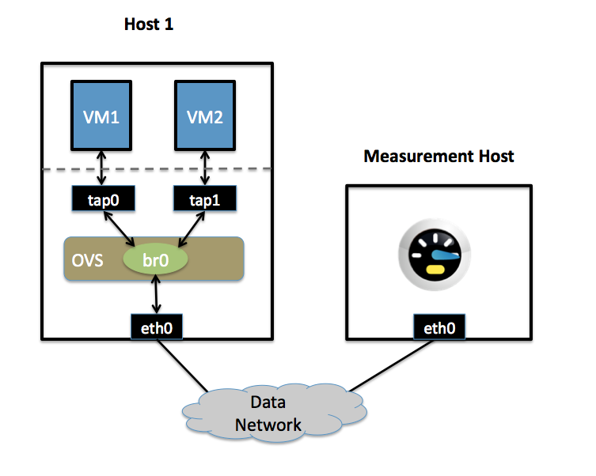

Quality of Service (QoS) Rate Limiting¶
This document explains how to use Open vSwitch to rate-limit traffic by a VM to either 1 Mbps or 10 Mbps.
Setup¶
This guide assumes the environment is configured as described below.
One Physical Network¶
Data Network
Ethernet network for VM data traffic. This network is used to send traffic to and from an external host used for measuring the rate at which a VM is sending. For experimentation, this physical network is optional; you can instead connect all VMs to a bridge that is not connected to a physical interface and use a VM as the measurement host.
There may be other networks (for example, a network for management traffic), but this guide is only concerned with the Data Network.
Two Physical Hosts¶
The first host, named host1, is a hypervisor that runs Open vSwitch and has one NIC. This single NIC, eth0, is connected to the Data Network. Because it is participating in an OVS bridge, no IP address can be assigned on eth0.
The second host, named Measurement Host, can be any host capable of measuring throughput from a VM. For this guide, we use netperf, a free tool for testing the rate at which one host can send to another. The Measurement Host has only a single NIC, eth0, which is connected to the Data Network. eth0 has an IP address that can reach any VM on host1.
Two VMs¶
Both VMs (vm1 and vm2) run on host1.
Each VM has a single interface that appears as a Linux device (e.g., tap0) on the physical host.
Note
For Xen/XenServer, VM interfaces appears as Linux devices with names like vif1.0. Other Linux systems may present these interfaces as vnet0, vnet1, etc.
Configuration Steps¶
For both VMs, we modify the Interface table to configure an ingress policing rule. There are two values to set:
- ingress_policing_rate
- the maximum rate (in Kbps) that this VM should be allowed to send
- ingress_policing_burst
- a parameter to the policing algorithm to indicate the maximum amount of data (in Kb) that this interface can send beyond the policing rate.
To rate limit VM1 to 1 Mbps, use these commands:
$ ovs-vsctl set interface tap0 ingress_policing_rate=1000
$ ovs-vsctl set interface tap0 ingress_policing_burst=100
Similarly, to limit vm2 to 10 Mbps, enter these commands on host1:
$ ovs-vsctl set interface tap1 ingress_policing_rate=10000
$ ovs-vsctl set interface tap1 ingress_policing_burst=1000
To see the current limits applied to VM1, run this command:
$ ovs-vsctl list interface tap0
Testing¶
To test the configuration, make sure netperf is installed and running on both VMs and on the Measurement Host. netperf consists of a client (netperf) and a server (netserver). In this example, we run netserver on the Measurement Host (installing Netperf usually starts netserver as a daemon, meaning this is running by default).
For this example, we assume that the Measurement Host has an IP of 10.0.0.100 and is reachable from both VMs.
From vm1, run this command:
$ netperf -H 10.0.0.100
This will cause VM1 to send TCP traffic as quickly as it can to the Measurement Host. After 10 seconds, this will output a series of values. We are interested in the “Throughput” value, which is measured in Mbps (10^6 bits/sec). For VM1 this value should be near 1. Running the same command on VM2 should give a result near 10.
Troubleshooting¶
Open vSwitch uses the Linux traffic-control capability for rate-limiting. If you are not seeing the configured rate-limit have any effect, make sure that your kernel is built with “ingress qdisc” enabled, and that the user-space utilities (e.g., /sbin/tc) are installed.
Additional Information¶
Open vSwitch’s rate-limiting uses policing, which does not queue packets. It drops any packets beyond the specified rate. Specifying a larger burst size lets the algorithm be more forgiving, which is important for protocols like TCP that react severely to dropped packets. Setting a burst size of less than than the MTU (e.g., 10 kb) should be avoided.
For TCP traffic, setting a burst size to be a sizeable fraction (e.g., > 10%) of the overall policy rate helps a flow come closer to achieving the full rate. If a burst size is set to be a large fraction of the overall rate, the client will actually experience an average rate slightly higher than the specific policing rate.
For UDP traffic, set the burst size to be slightly greater than the MTU and make sure that your performance tool does not send packets that are larger than your MTU (otherwise these packets will be fragmented, causing poor performance). For example, you can force netperf to send UDP traffic as 1000 byte packets by running:
$ netperf -H 10.0.0.100 -t UDP_STREAM -- -m 1000